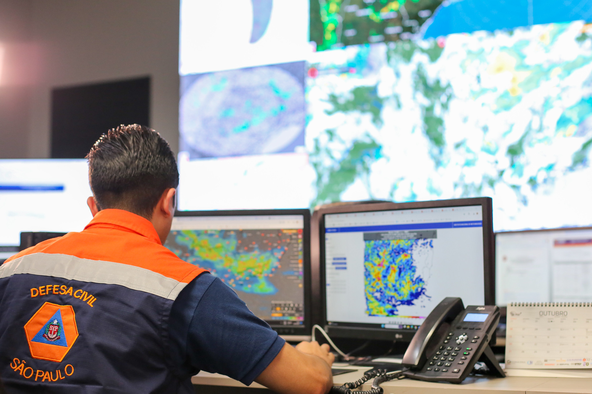
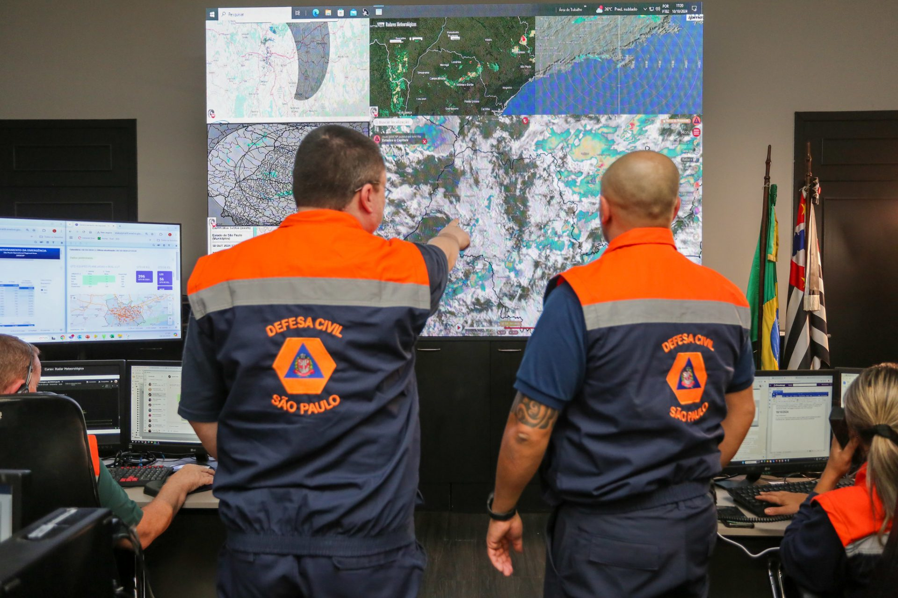
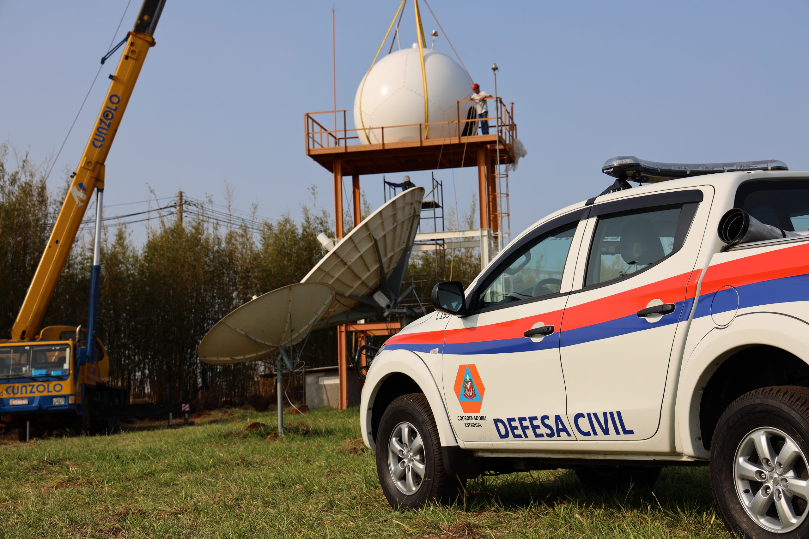
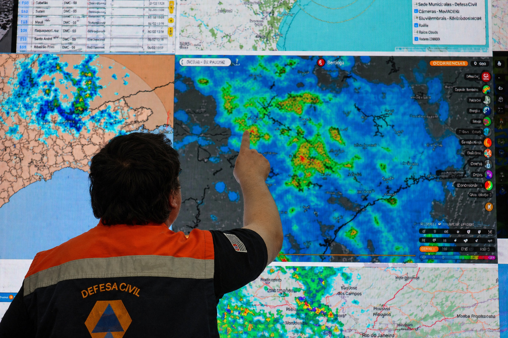

Plataforma integrada para monitoramento, análise e previsão de eventos meteorológicos extremos utilizando Inteligência Artificial, integração de dados meteorológicos e visualização geoespacial.
Acessar RepositórioO CePEX está inserido no contexto dos Centros de Ciência para o Desenvolvimento (CCD), iniciativa financiada pela FAPESP em conjunto com a Defesa Civil do Estado de São Paulo, voltada ao desenvolvimento científico e tecnológico para enfrentamento de desafios estratégicos do Estado.
O Centro Paulista de integração de dados para monitoramento de Eventos eXtremos (CePEX) terá sede na UNESP e atuará na integração de múltiplas fontes de dados meteorológicos, ambientais e operacionais.
A proposta busca utilizar modelos analíticos, Inteligência Artificial e aprendizado profundo para antecipar cenários críticos envolvendo:
• Tempestades severas
• Alagamentos
• Deslizamentos
• Períodos de estiagens
• Extremos hidrológicos
• Monitoramento de raios
Centralização de informações provenientes de radares meteorológicos, sensores ambientais, APIs institucionais e imagens de satélite.
Desenvolvimento de modelos utilizando Deep Learning, CNNs, RNNs, Modelos Fundacionais e análise espaço-temporal.
Plataforma integrada para consultas, sobreposição de camadas, dashboards e análise operacional.
Python, Kafka, APIs REST, ETL e processamento distribuído.
PostgreSQL, PostGIS e MySQL.
React, ArcGIS e dashboards interativos.
PyTorch, TensorFlow, aprendizado profundo e Modelos Fundacionais.

O projeto prevê integração com sistemas da Defesa Civil, permitindo apoio à tomada de decisão, monitoramento centralizado e visualização operacional.

Modelos analíticos e IA serão utilizados para antecipação de eventos extremos e mitigação de riscos ambientais.
A base de dados utilizada inicialmente no projeto está disponível no repositório IPMet Radar Dataset .


Coleta e centralização de múltiplas fontes.
Processamento e organização geoespacial dos dados.
Predição e análise de eventos extremos.
Visualização integrada para analistas e gestores.